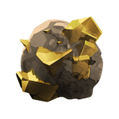

主页 / 货币
货币
日常游玩主要用两种资源结算：文（Wen）与矿石（Ore）。菜单商店还可用罗宝（Robux）付款，罗宝不是背包物品。
| 名称 | 英文 | 性质 | 主要用途 |
|---|
|
文 |
Wen |
角色账户数值（HUD 右下角） |
NPC 商店、神庙、坐骑、接呼吸、精炼等 |
 |
矿石 |
Ore |
背包物品 · 稀有度 神话 |
菜单商店里代替罗宝购买（加成 / 重置 / 旋转等） |
|
罗宝 |
Robux |
Roblox 平台货币 |
菜单商店直购、部分通行证；可与矿石价互换计价 |
矿石在档案里标为神话级（Rarity 6）。口语常叫「传说矿」，以游戏稀有度为准。
文 · Wen
主世界通用金币。击杀、任务、宝箱等都会进账；右下 HUD 实时显示余额。
怎么赚
- 刷怪 / 头目：几乎所有 NPC 击杀奖励都带文（金额随怪强度变，Boss 可达数百）。
- 任务交付：主线阶梯、区域支线完成会给文。
- 开箱：世界宝箱 / 密封箱常有文保底或掉落。
- 商店卖货：部分物品可卖回给 NPC（视对话）。
花在哪
- NPC 商店（武器、药水、材料、饰品等）
- 神庙解锁、坐骑购买（15,000）、呼吸接取费用等
- 精炼台阶消耗等玩法付费点
赚取技巧
- 开菜单商店的 2x Wen（15 分钟，240 罗宝 / 16 矿石）再去刷高产值 Boss。
- 选当前等级段任务怪 + 头目循环，比闲逛小怪快。
- 有文折扣类公会被动时，大件采购前先确认。
- 神庙 / 马 / 呼吸等大额消费先规划，避免接流派时钱不够。
矿石 · Ore
高稀有交易矿。进背包，可在 M → 商店 切到「矿石」页，用它代替罗宝买加成、重置、旋转次数等。
档案条目：Ore · 介绍原文：特殊柜台认可的亮矿，普通硬币不好使时用它。
与罗宝的换算
- 商店矿石价：
ceil(罗宝标价 ÷ 15)，最少 1。
- 系统配置
SellRobuxPayout.RobuxEach = 15：按约 15 罗宝 = 1 矿石 计价。
怎么赚
- 开箱（主要）：多数宝箱表内有矿石
- 常见箱 / Lost 箱约 2.5%
- 雪箱约 2%
- 稀有 / 冰 / 密封 T1–T3 / 世界事件 / 奥乌兰箱与缓存约 5%
- 钓鱼：稀有渔获池可出矿石（低概率）。
- 任务：如 Restock the Infirmary、Supply the Settlement 等奖励链可能给矿石。
花在哪
- 菜单商店：2x 经验 / 文 / 幸运 / 精通 / 灵魂、各类重置、公会与肤色旋转等（详见 商店）。
- VIP、额外角色槽等部分商品仅罗宝，矿石买不了。
赚取技巧
- 优先刷密封箱与世界事件箱（5%），再辅以奥乌兰缓存。
- 开箱前叠 2x Luck / 4x Luck 可提高整体掉落手感（矿石本身是独立 chance）。
- 钓鱼当副业：挂机渔场偶尔补一颗，别当主刷法。
- 攒矿石优先换长效刚需（重置流派、旋转），别先冲动买短时加成除非刚要冲等级。
罗宝 · Robux
平台充值货币。菜单商店默认可用罗宝购合同款商品；与矿石二选一付款。
- Gamepass（马定位器、夜市定位、表情、额外槽等）通常只收罗宝。
- 不是游戏内存档「数值货币」，不显示在文余额旁。
总技巧
- 文靠战斗与任务滚雪球；大额锁定目标前先算账。
- 矿石靠箱子；当免费版「罗宝替代品」，换算约 15:1。
- 两种货币互不替代 NPC 文价商品：矿石不能直接买马 / 付神庙（那些只要文）。
- 别和「精炼矿 Refinement Ore / Mythic Refinement Ore」搞混——那是精炼材料，不是菜单商店矿石。